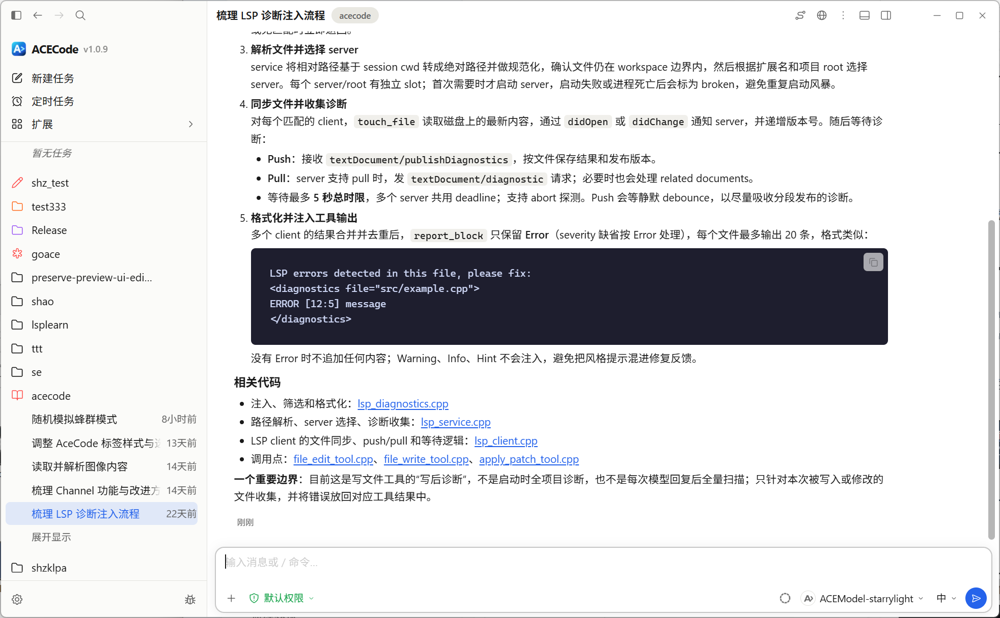
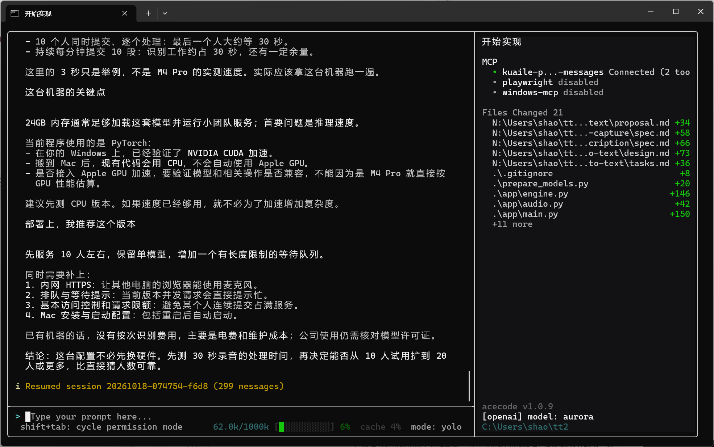

查找代码
搜索项目文件，查看仓库结构、依赖关系和历史修改。
用自然语言描述需求，让 ACECode 帮你阅读代码、修改文件、运行命令和测试。支持桌面端和终端版。

在同一窗口查看项目文件、任务对话和修改结果，也可以打开终端运行命令。

在本机终端或 SSH 环境中处理任务，查看工具状态与文件变更。
搜索项目文件，查看仓库结构、依赖关系和历史修改。
编辑文件、运行命令和测试，再查看差异与执行结果。
查看正在执行的操作、工具输出和任务记录，需要时停止任务或补充要求。